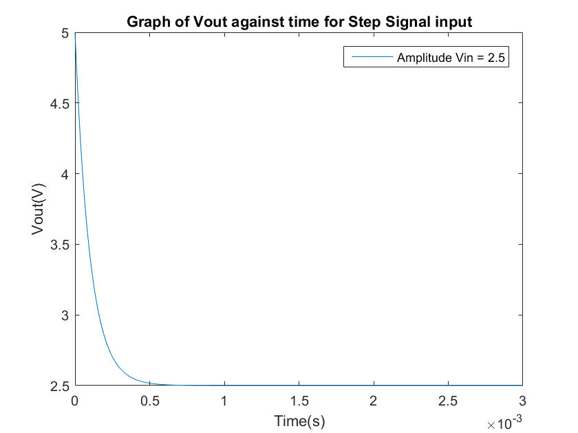
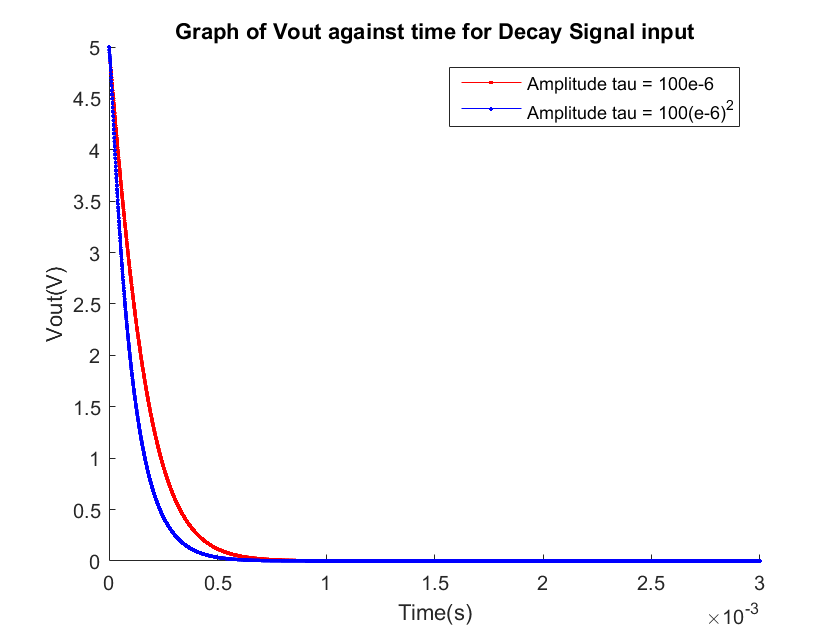
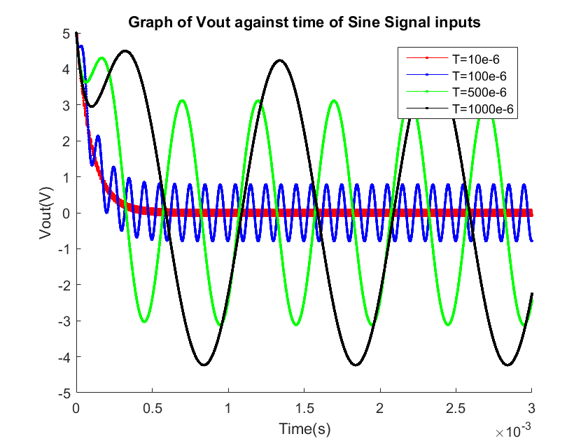
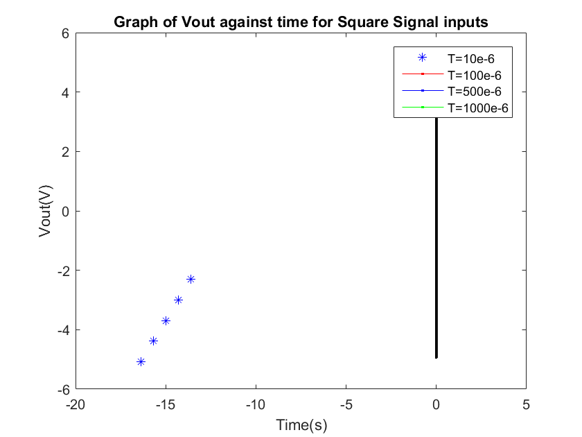
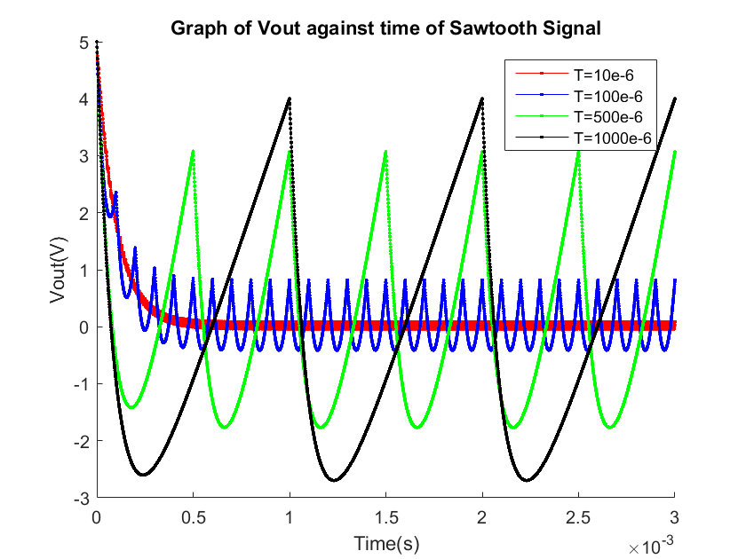

1) RC circuit - Excercise 1
Introduction:
The following script tests the midpoint method implemented in midpoint.m by simulating an RC circuit for several inputs.
Mathematics involved:
The following equations characterize the system:
Code
First we set initial conditions
R = 1000; C = 100e-9; qc0 = 500e-9; tf = 0.003; h = 0.000001;
STEP SIGNAL
Vin = @(t) 2.5*heaviside(t); [Tout,Vout] = midpoint(qc0,h,tf,Vin,R,C); figure(1); plot(Tout,Vout); title('Graph of Vout against time for Step Signal input'); xlabel('Time(s)'); ylabel('Vout(V)'); legend('Amplitude Vin = 2.5')
With the given initial conditions qc0 = 500e-9 the voltage at t=0 is V=1/C * qc(0) = 5 V. In the graph this can be observed to be the initial value. Since the input is a step signal of amplitude 2.5V we expect the steadystate output to eventually be 2.5V, as the graph shows it does. However this does not happen because volatage cannot change instantaneously accros a capacitor, as this would make q' be infinity. Since this is the unit step response, we can expect this transient behaviour to appear in the next graphs whose initial value is not 5V, since is equivalent to multiplying the input signal by a an unit step signal.
DECAY SIGNAL
h = 0.000001; Vin = @(t) 2.5*exp(-t/(100e-6)); [Tout,Vout] = midpoint(qc0,h,tf,Vin,R,C); figure(2); hold on; plot(Tout,Vout,'-r.'); Vin = @(t) 2.5*exp(-(t^2)/(100e-12)); [Tout,Vout] = midpoint(qc0,h,tf,Vin,R,C); plot(Tout,Vout,'-b.'); title('Graph of Vout against time for Decay Signal input'); xlabel('Time(s)'); ylabel('Vout(V)'); legend('Amplitude tau = 100e-6','Amplitude tau = 100(e-6)^2');
In this graph
SINE SIGNAL
Vin = @(t) 5*sin((2*pi/(10e-6))*t); [Tout,Vout] = midpoint(qc0,h,tf,Vin,R,C); figure(4) hold on plot(Tout,Vout,'-r.'); Vin = @(t) 5*sin((2*pi/(100e-6))*t); [Tout,Vout] = midpoint(qc0,h,tf,Vin,R,C); plot(Tout,Vout,'-b.'); Vin = @(t) 5*sin((2*pi/(500e-6))*t); [Tout,Vout] = midpoint(qc0,h,tf,Vin,R,C); plot(Tout,Vout,'-g.'); Vin = @(t) 5*sin((2*pi/(1000e-6))*t); [Tout,Vout] = midpoint(qc0,h,tf,Vin,R,C); plot(Tout,Vout,'-k.'); title('Graph of Vout against time of Sine Signal inputs'); xlabel('Time(s)'); ylabel('Vout(V)'); legend('T=10e-6','T=100e-6', 'T=500e-6','T=1000e-6');
Analysing the circuit with phasors the transfer function is:
$$ Vout = Vin * \frac{\frac{1}{jwC}}{\frac{1}{jwC}+R} = \frac{1}{jwRC+1}
Since this tends to 0 as w tends to infinity and tends to 1 when w tends to zero, we can infer it is a low-pass filter. The graph shows how evey sine wave
SQUARE SIGNAL
Vin = @(t) 5*square((2*pi/(10e-6))*t); [Tout,Vout] = midpoint(qc0,h,tf,Vin,R,C); figure(3) hold on plot(Tout,Vout,'-r.'); Vin = @(t) 5*square((2*pi/(100e-6))*t); [Tout,Vout] = midpoint(qc0,h,tf,Vin,R,C); plot(Tout,Vout,'-b.'); Vin = @(t) 5*square((2*pi/(500e-6))*t); [Tout,Vout] = midpoint(qc0,h,tf,Vin,R,C); plot(Tout,Vout,'-g.'); Vin = @(t) 5*square((2*pi/(1000e-6))*t); [Tout,Vout] = midpoint(qc0,h,tf,Vin,R,C); plot(Tout,Vout,'-k.'); title('Graph of Vout against time for Square Signal inputs'); xlabel('Time(s)'); ylabel('Vout(V)'); legend('T=10e-6','T=100e-6', 'T=500e-6','T=1000e-6');
insert comments about the square signal graph here
I really don't know anything about this
SAWTOOTH SIGNAL
Vin = @(t) 5*sawtooth((2*pi/(10e-6))*t); [Tout,Vout] = midpoint(qc0,h,tf,Vin,R,C); figure(5); hold on; plot(Tout,Vout,'-r.'); Vin = @(t) 5*sawtooth((2*pi/(100e-6))*t); [Tout,Vout] = midpoint(qc0,h,tf,Vin,R,C); plot(Tout,Vout,'-b.'); Vin = @(t) 5*sawtooth((2*pi/(500e-6))*t); [Tout,Vout] = midpoint(qc0,h,tf,Vin,R,C); plot(Tout,Vout,'-g.'); Vin = @(t) 5*sawtooth((2*pi/(1000e-6))*t); [Tout,Vout] = midpoint(qc0,h,tf,Vin,R,C); plot(Tout,Vout,'-k.'); title('Graph of Vout against time of Sawtooth Signal'); xlabel('Time(s)'); ylabel('Vout(V)'); legend('T=10e-6','T=100e-6', 'T=500e-6','T=1000e-6');
insert comments about the sawtooth signal graph here
I really don't know anything about this
%end